Chapter 7 External server
7.1 About BPLIM
The ability to collect and accumulate microdata has been a powerful function of central banks. In the scientific community, an increasing number of research has been conducted using the micro-level information. To enhance collaborations between the central bank and the researchers, an advanced data sharing platform is essential. Accordingly, the Banco de Portugal Microdata Research Laboratory (BPLIM) (Laboratório de Investigação em Microdados do Banco de Portugal) is created to facilitate future scientific research effort that incorporates the use of microdata. By eliminating the data access barrier, BPLIM aims to inspire researches that effectively utilize the Portuguese administrative micro datasets and contribute to our understanding of the economic and financial challenges of our time.
7.2 Data Confidentiality
While researchers prefer unrestricted access to data, care must be given to secure the confidentiality of the data providers. All access granted to microdata should obey the applicable law and the data should only be used for research purposes.
Therefore, the data is only made available to the Banco de Portugal’s internal researchers and those approved external researchers who have agreed to the bank’s legal provisions concerning the use of its data. Specifically, each external researcher is required to sign a Confidentiality Agreement with the bank and will only be allowed to access a customized set of data that is tailored to his/her research needs. All micro data sets made accessible to external researchers will be anonymized and stored in information systems belonging to Banco de Portugal (BdP).
Type of access to the Microdata varies according to levels of confidentiality (low, medium, high).
Low: information that can be obtained to the public or scientific community by other institutions
Medium: information pertaining to institutions (firms, banks, etc.) not included in the previous case (some CB, CRC Firms, Bank Balance Sheet Data).
High: information about individuals or households not included in the Low case (CRC Individuals).
7.3 Access to the External Server
- Upon access approval, the User will be able to connect to the external server using one of two possibilities.
- NoMachine client access (preferred): see Appendix 4 for details on installation and use
- Browser access (low performance): see Appendix 5 for further details
- Password policy:
- The first password delivered must be changed at the first login.
- After 60 days the password will expire: change the password within this time frame (see Appendix 3 for instructions on how to change the password)
- The passwords to be specified must meet the requirements described in Appendix 3.
- Upon access using ‘NoMachine’
These are the first three screens you will see


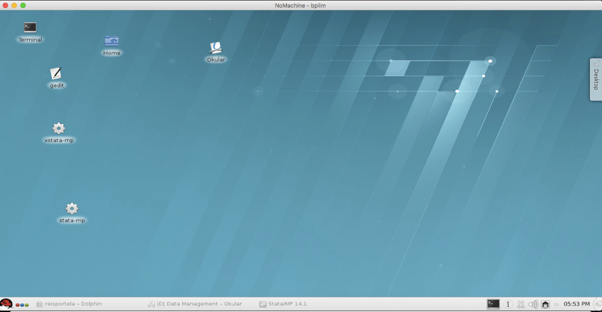
- Select the “Kickoff Application Launcher” menu (in the lower left corner):

- Then you should:
- Click on the “Applications” button
- Select “BPLIM” and click on your project (i.e., “pxxx_name”). At this stage, you should see a graphical environment (‘Dolphin’ application2) like this:
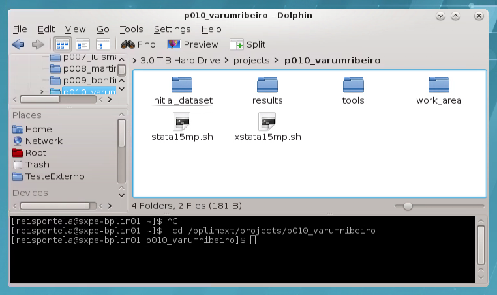
You can see the prompt command line together with ‘Dolphin’ using the keyboard shortcut ‘F4’.
The directories that you have access to within the folder include:
| initial_dataset | Data sources provided by BPLIM. You have read-only access to this directory. |
| results | Output files that researchers wish to generate and extract from the server. You have read-write access to this directory. |
| tools | Specific analysis tools. You have read-only access to this directory. |
| work_area | Temporary work directory. You have read-write access to this directory. |
By default you also have two files (see image above): (1) stata15mp.sh; (2) xstata15mp.sh. Files with the "sh" extension allow you to send commands to your operating system or to enter your operating system for interactive use. The first one starts Stata version 15 in non-graphical mode, while the second launches Stata 15 in graphical mode. You can start both applications by typing in the Linux shell, for example, ‘xstata15mp.sh’, or by double clicking the file name in ‘Dolphin’3
To reset and disconnect the remote desktop connection or session, you can simply log out your remote session, as shown on the screenshot below. After you log out, close the window.4

Confirm before exiting by clicking on the "Logout" button to close the window5

- In case you do not logout, your session will be left open until your next login. You may use this facility to run your programs. However, one must be aware that this option uses resources from the server, so the efficient solution to run your programs “over night” is using the batch mode as described in Step 6 below. Furthermore, in case the server is rebooted during a maintenance procedure your session will be automatically close and unsaved documents will be lost. We recommend you save at regular intervals your statistical programs.
7.4 Using the ‘shell’ in a Linux Operating System
If you wish to run your programs in batch mode, then you must use the ‘shell’ of Linux. You can also use the ‘shell’ to organize the files in your working space.
- The ‘shell’6 [^[5]{.underline}^](https://translate.googleusercontent.com/#footnote5) do Linux pode ser aberta a partir d e in Linux can be accessed from
RedHat > ApplicationsApplications >> SystemSystem> >Terminal Terminal
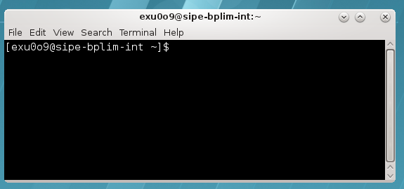
See the Appendix for a list of some of the most used commands.
In case you are using a non-English keyboard, the ‘true’ keyboard might be different from the one you see. The changes apply mostly to the symbols, not letters or numbers. For example, in case you have a Portuguese keyboard on your computer the ‘+’ is now in key ‘?’, or the ‘*’ is in SHIFT + ?. This issue is specific to the Operating System of your computer
Remember that Linux is case-sensitive: e.g., “LS” and “ls” are treated as different commands.
You can use the arrow keys to scroll up and down through the commands you've entered.
You can use the “Tab” key to complete the command line automatically.
E.g., type the following line to list elements within a folder in a ‘human readable’ format, h, long list format, l, in reverse order, r, sort by modification time, t, and almost all files, A,
ls -lArth
7.5 Using Stata
- Stata can be accessed in interactive graphical or non-graphical modes.7
Interactive non-graphical mode
Move to the desired folder, e.g.,
cd /bplimext/projects/I001_jdoe/
and type
/opt/bplimext/stata15/stata-mp

You may add a ‘path’ to your system folder by typing, for the example on Stata 15, the following command in the shell
PATH = $PATH:/opt/bplimext/stata15
For the interactive graphical mode click on the icons “xstata14mp.sh” (Stata 14) or “xstata15mp.sh” (Stata 15) located in the ‘desktop’, depending on the desired Stata version,
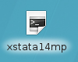
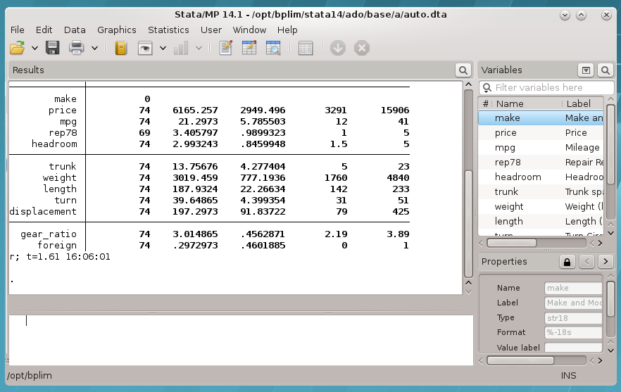
- You can use the 'Do-file Editor' in Stata to create your own
"do-files" and "ado-files", or alternatively you can use
**KWrite** editor (or 'gedit'). Poder á abri-lo a partir de
**[RedHat]{.underline}** \>
- You can open it from **RedHat** \> **Applications**
**Applications** \>\> **Utilities** **Utilities** \> \> **KWrite**
. **KWrite**. You can also launch 'KWrite' from the 'shell' by
typing 'kwrite'- In case the icon is not in your desktop, use Dolphin, move to folder ‘/opt/bplimext/stata15’, and drag and drop the file ‘xstata-mp’ into the desktop
- To look for “ado-files”:
“Ado-files” are text files containing the Stata program. It is advisable that one create and save his/her “ado-files” so the results can be replicated later by running the saved “ado-files” on the BPLIM’s datasets.
Stata looks for “ado-files” in several places. When it comes to personal ado-directories, they can be categorized in four ways:
(SITE), the directory for “ado-files” your site might have installed;
(PLUS), the directory for “ado-files” you personally might have installed;
(PERSONAL), the directory for “ado-files” you might have written;
(OLDPLACE), the directory where Stata users used to save their personally written ado-files.
The ado-files you have just written or those created for this project can be found in the current directory (.).
Specific ‘ado-files’ you may ask to be made available in the server will be placed in your folder ‘/bplimext/projects/YOURPROJECTID/tools’. You should add this folder to your Stata ‘ado-files’ folder by executing the following command within Stata,
sysdir set PERSONAL “/bplimext/projects/YOURPROJECTID/tools”
You may also edit your ‘profile.do’ file, located in your root folder, “/home/YOURPROJECTID/”, and add key instructions you may want to be executed every time you start Stata. The above instruction is one of such cases. You can create, or edit, the file ‘profile.do’ using ‘Do-file Editor’ within Stata (‘vi profile.do’ or KWrite are also a possibility).
The sysdir command within Stata will tell you where they are on your computer:
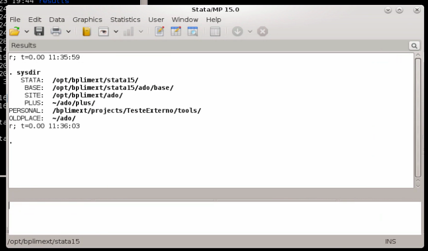
7.6 Stata in ‘batch’ mode
- Start a 'shell' in Linux and navigate to the directory of the “do-file” file that you want to run (ex: prog1.do)
cd /bplim/projects/I001_jdoe/work_area/ cd /bplimext/projects/I001_jdoe/work_area/
- You might find it easier to use ‘Dolphin’ (= File Manager) to move over your folder structure. In this case, we recommend activating the ‘shell’ (= ‘Terminal’) associated with ‘Dolphin’
use Dolphin/File Manager
click ‘F4’ to activate the shell with Dolphin. Benefit: fast transition within folders and, at the same time, the ability to run shell commands
Create an ASCII file named, e.g., ‘batch_prog1’
Inside the file write just a line with the execution command you would type in the ‘shell’; e.g.,
/opt/bplimext/stata15/stata-mp do /bplimext/projects/BPlim_inicial/work_area/prog1.do
You can use, for example, the command line app ‘vi’ to create the batch file

- The batch file can also be created using apps like ‘kwrite’ or Stata ‘do file editor’
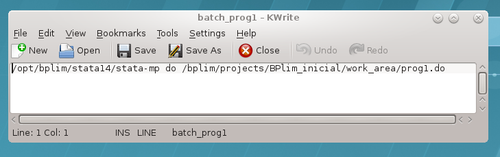
or
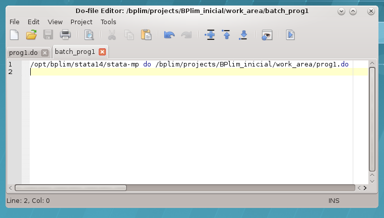
You may add the extension ‘.txt’ to the name of the batch file, as sometimes Stata doeditor does not ‘see’ the file ‘batch’, while it ‘sees’ ‘batch.txt’
Once the batch file is created one runs the .do file in batch mode by typing in the ‘Terminal’:
at now –f batch.txt
Type ‘man at’ to see further option of the command ‘at’; e.g., one could type
at now + 5 hours –f batch.txt
or
at now + 4 minutes --f batch\_prog1to run the Stata program within 5 hours or 4 minutes from now, respectively. ‘man’ is the help function in Linux
Type ‘top’ in the shell/Terminal to confirm the program is running
Under ‘top’ type ‘i’ to hide irrelevant processes (show less output)
To kill a running process with ‘top’ press ‘k’, for ‘kill’, write > the process number and then type ‘9’. The process number is > identified in the first column as PID
To get out of the top, type ‘q’
Useful features of the command ‘at’:
‘atq’: use it to see programs in the batch queue (an ‘=’ sign indicates the program is running; an ‘a’ indicates it is in the queue and we see the time when it will be executed)
‘atrm #’: remove a batch from the batch queue
one can see how the batch is running by typing
‘tail –f logcrc_may21.log’
It allows you to see an updated version of the last lines of the log; i.e., it updates each time the log is changed by Stata. A key advantage of tail is that it does not interfere with the log file, namely it does not write over it.
- Another way to run a program in the background is by using the command ‘screen’
‘screen’ is useful when one wants to run Stata in interactive mode and still guarantee that if the network connection goes down one does not lose the session. We can simply kill the ‘NoMachine’ session and recover it later by typing ‘screen –r’
We can run several instances of screen. If this is the case, after opening a new NoMachine session we need to type in the Terminal shell ‘screen –d’ to identify the running background sessions. We can retrieve a particular session by knowing the ‘pid’ number and typing ‘screen –r 34176’
7.7 Additional Statistical Software
You can also use ‘R’ and ‘python’ by issuing in the shell the respective designation. Both applications can only be used in the ‘shell’. You can check the packages available in R by tipping ‘installed.packages()’.
7.8 Allowed outputs
Stata results can be exported to a file on disk using one of the following formats:
ASCII files: e.g., log files
graphs: as .PNG (do not use the option save, or saving, within a graph command; instead, use the separate command line ‘graph export xyz.png’)
csv: CSV (Comma Separated Value format), e.g., for use with MS Excel
rtf: Rich Text Format for use with word processors
xls or xlsx: Excel files with output tables
tex: Latex format
7.9 Remove outputs
Place in the “results” folder all the outputs you want to remove from the server.8
Send an email with the title “project I001_jdoe: request for result extraction” to “bplim@bportugal.pt”.
Upon validation, the results will be sent to you via email.
7.10 Scientific Support
Researchers will be provided with the necessary scientific and computational support (i.e., advises on programming, computational resources, micro econometrics, and econometrics of panel data for research undertaken with the selected Microdata).
7.11 Appendix 1 – Basic ‘shell’ Commands on Linux
top List the procedures that are being executed on the server
clicar em ' i ' para omitir processos adormecidos; press 'i' > option to omit background processes;
clicar press ' h ' para help on top options ; 'h' > option to obtain the top command help.
pwd Show current working directory
cd Change directory
cd /bplimext/projects/I001_jdoe/work_area/
‘cd ~’ moves to your home folder
cpcp Copy file(s) to a given path
cp prog1.do /bplimext/projects/I001_jdoe/results
mvmv Move file(s) or rename a file from a given path
mv prog1.do /bplimext/projects/I001_jdoe/results
rmrm Delete a file
rm /bplimext/projects/I001_jdoe/results/prog1.do
mkdirmkdir Creates a directory
mkdir programas
rmdirrmdir Deletes a directory
rmdir programas
screenscreen Switch between screen
screen top
stata – mpmanman Show the manual page for the given command
man ls
- dudu -h Check the information of disk usage of files and directories.
The “-h” option with “du” command provides results in “Human Readable Format”.
Ex: du /bplimext/projects/I001_jdoe/work_area/
dfdf -h Check disk space utilization and show the disk space > statistics in “human readable” format.
vi View ‘ASCII’ files; e.g., log files
ghostscript Preview files with the extensions of .eps and .pdf
ghostscript /bplimext/projects/I001_jdoe/results/`file_name.pdf'
okular View ‘PDF’
find Find files
Structure: find /path option filename
find . –name “*.do”
Send the ‘find’ output to a file:
find . –name “*.do” > find_results.txt
Look for a particular string within the ‘find’ output:
find . –name “*.do” | grep “analise”
Identify files with extension ‘.do’ that contain the word ‘graph’:
find . –name “*.do” -exec grep “graph export” ‘{}’ \; -print
passwd Change your password
To exit a program, type CTRL + C (‘CTRL + C’ kills a particular execution in the shell)
7.12 Appendix 2 – Using the ‘vi’ file editor
In the shell type ‘vi batch1.txt’
This are the main shortcut keys
‘i’ insert text
‘ESC’ key get out of the ‘insert’ mode
‘x’ delete specific characters
‘dd’ delete a full line
‘10 dd’ delete 10 lines
‘yy’ copy lines
‘p’ paste lines
‘SHIFT + G’ go to the last line
‘gg’ goes to the first line
‘ESC + q!’ exit ‘vi’ without writing
‘w!’ write and replace the file
‘ESC + q’ exit the ‘vi’ session
Check, for example, https://www.cs.colostate.edu/helpdocs/vi.html
Much easier solution: call ‘gedit’ file editor
Linux commands I have to add to the manual
‘CTRL + R’: allows me to recover a previous command
vi .bash_history
7.13 Appendix 3 – External server’s password requirements
| Rule | Value | Notes |
| Maximum Password Lifetime | 60 days | After 60 days the password will expire and has to be changed in the next login. The password can be changed at any moment using: (1), “All Applications | Settings | System Settings – Account Details”, click “Change Password”; or, (2), in the ‘Shell’ type ‘passwd’ |
| Minimum Number of Character Classes | 4 | You should include at least 4 classes of characters in the password. For example, small letters, capital letters, numbers and punctuation marks. There are a total of five classes:
Number of characters: by using the same character 3 or more times may imply the use of an additional class (it is highly recommended that you do not use consecutively the same character more than 2 times) |
| Minimum Length of Password | 8 | The minimum size of the password is 8 characters (it may be higher in case you repeat characters) |
| Password History | 7 | One cannot use a password defined in the previous set of 7 passwords |
| Maximum Consecutive Failures | 6 | If the user fails 6 consecutive times the password the account will be locked for the time defined in “Lockout Time” |
| Fail Interval | 60 sec. | Time interval for attempts to enter a password to be considered consecutive. If more than 60 seconds have elapsed since the last attempt, consecutive attempts are no longer considered, ie the number of failures, according to the requirement "Maximum Consecutive Failures" becomes one. |
| Lockout Time | 600 sec. | Time (10 minutes) during which the account will be locked if the maximum number of failed attempts is reached. |
7.14 Appendix 4 – Download, install and configure NoMachine client
Step 1: go to the link below and use the credentials provided by BPLIM to access the site. Note: sometimes the internet provider, e.g., an University, may block the access to this particular web site. Please check with your provider in case you get an error while trying to use the link.
https://www.bportugal.pt/webdrive/index.php/s/irAzxZmir8KHyzD/authenticate

Step 2: download the file with an extension compatible with your OS (Operation System)

Step 3: install ‘NoMachine’
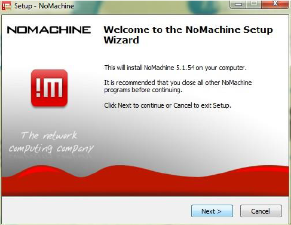


Step 4: reboot your computer
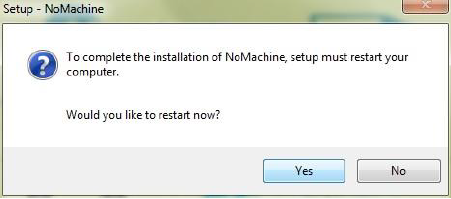
Step 5: NoMachine client access configuration
Step 5.1: start ‘NoMachine’ and create a new connection

Step 5.2: Choose ‘NX protocol’
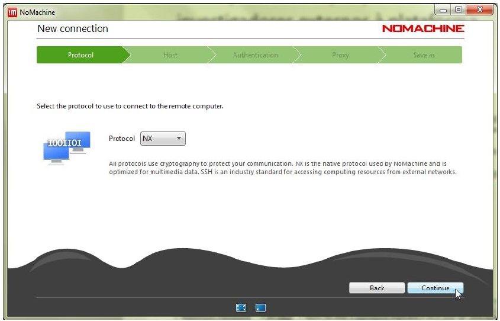
Step 5.3: Define the ‘Host’ as bplim.bportugal.pt, ‘Port’ 4000
Click ‘Use UDP communication for multimedia data’
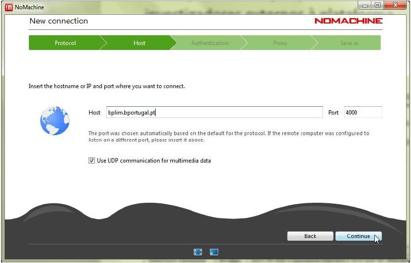
Step 5.4: Use password authentication, with or without proxy, depending on the instructions of the network administrator / user's computer support, with the name “BPLIM-LabInvestMicrodados Banco de Portugal”.
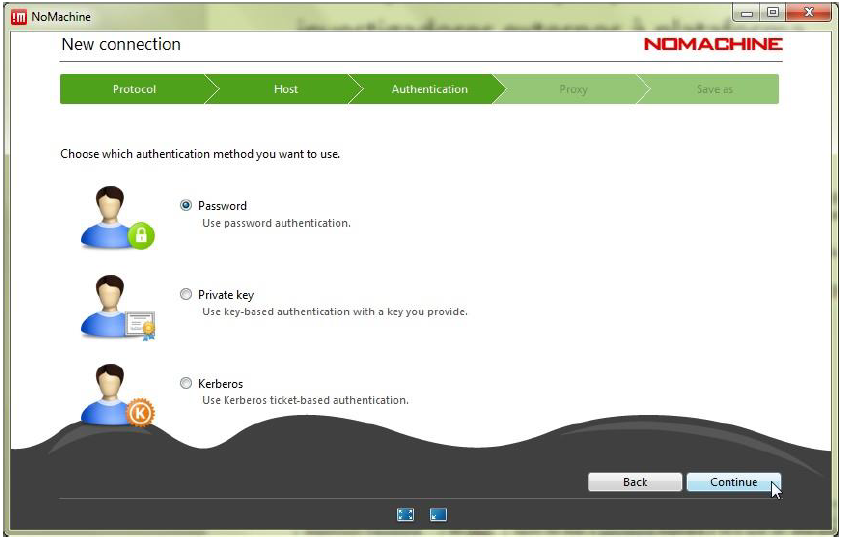
Step 5.5: Do not use a ‘proxy’
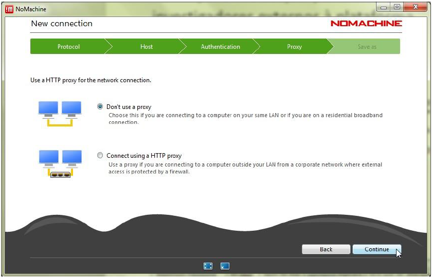
Step 5.6: Define a name for the connection
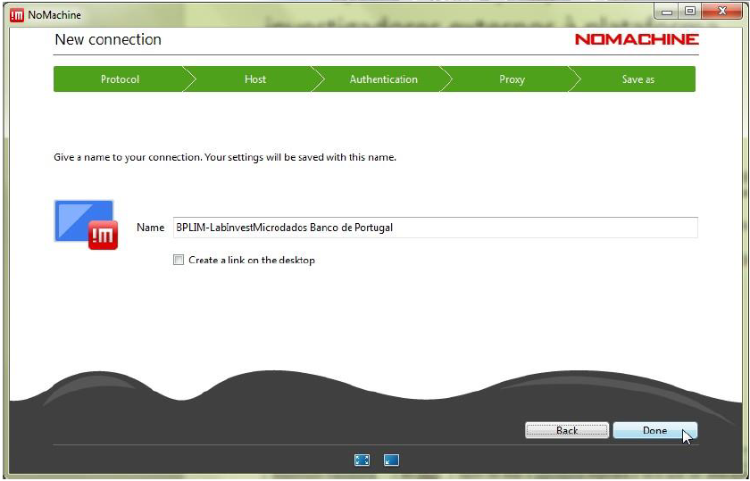
Step 5.7: Once the entry for bplim.bportugal.pt has been created, connect:

Step 5.8: Before the first effective connection it may be necessary to accept the certificate from bplim.bportugal.pt
The Investigator should verify that the "fingerprint" (verification code) is:
29 DC CC 9E 8B 87 23 B1 76 28 8D 29 3F D0 E3 EB 4E 73 76 9D

Step 5.9: Connect with the UserID (case sensitive) and password provided by Banco de Portugal:
Step 5.10: After the first successful login, it is necessary to change the password, which must comply with the Password Policy defined above.
If the new password does not comply with the Password Policy, the original password provided by the Banco de Portugal will be re-requested. See Appendix 3 for details.
The NoMachine client does not tell you why the new password was not accepted – it is the responsibility of the user to verify that the new password is in compliance.
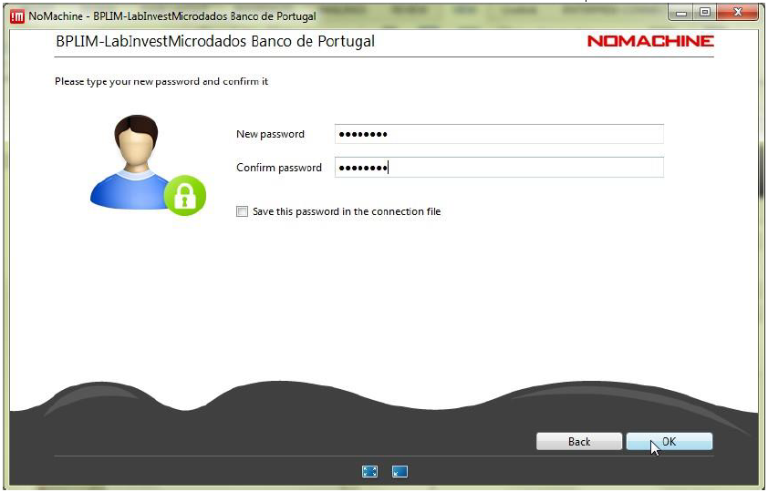
Step 5.11: Upon login success the following screens should appear
Once logged in and with access to a KDE session, click on the upper right corner of the KDE desktop, as shown below, to access the menu and then expand the screen as exemplified for greater ease of use.
Step 5.12: You should see the following screen.
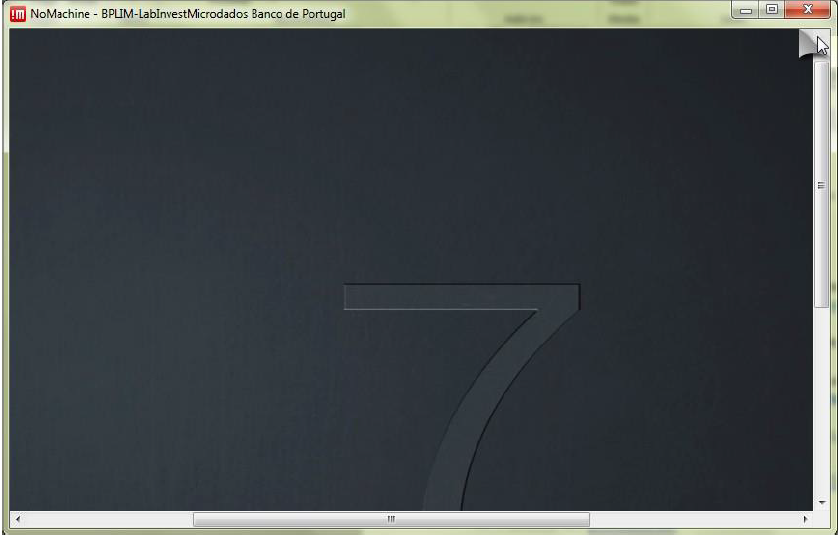
Step 5.13: Click ‘Display’
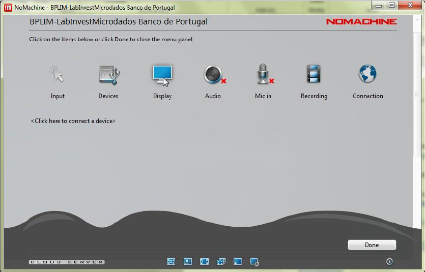
Step 5.14: Click ‘Fit to window’ and click ‘Done’
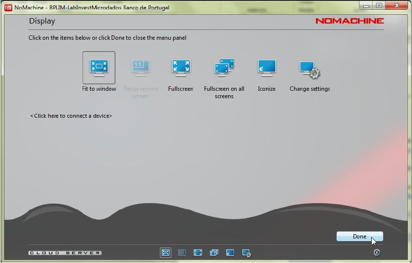


7.15 Appendix 5 – Browser access
Use a browser (recommended Chrome, Firefox, Opera or Safari) and go to https://bplim.bportugal.pt:4443
Configuring browser access
To a large extent the configuration of the access via browser is similar to the configuration through the client NoMachine. However, the features and performance are lower than the “NoMachine client access”.
In case you are using a Portuguese Keyboard, note that the keyboard has to be set to Portuguese, as shown below, and even then some characters may have to be specified on the virtual keyboard (depending on the browser used). Please confirm the configuration of characters on your keyboard.
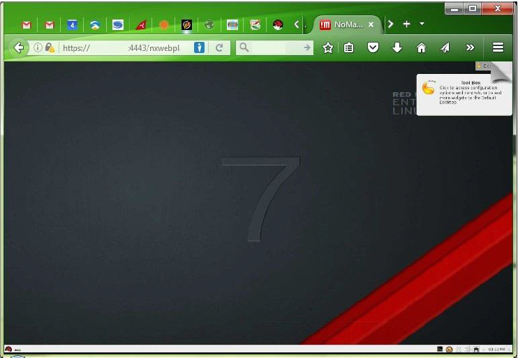
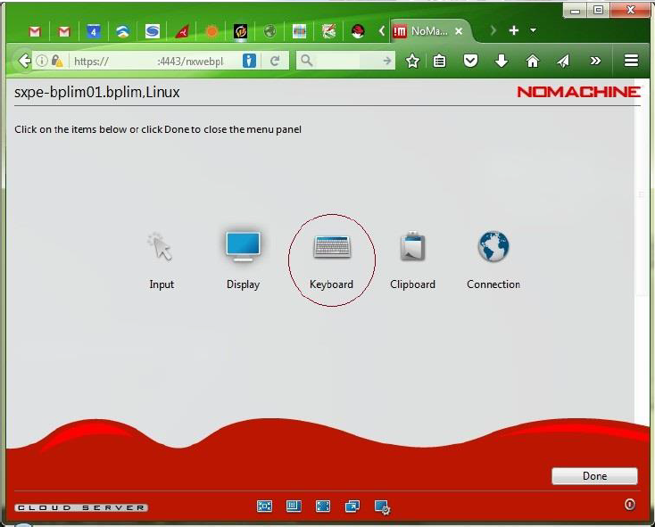
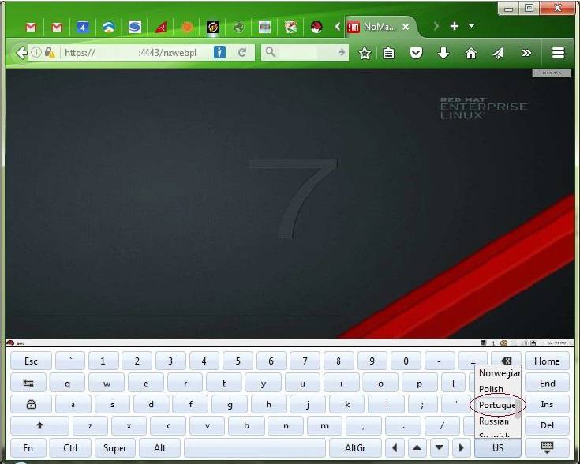
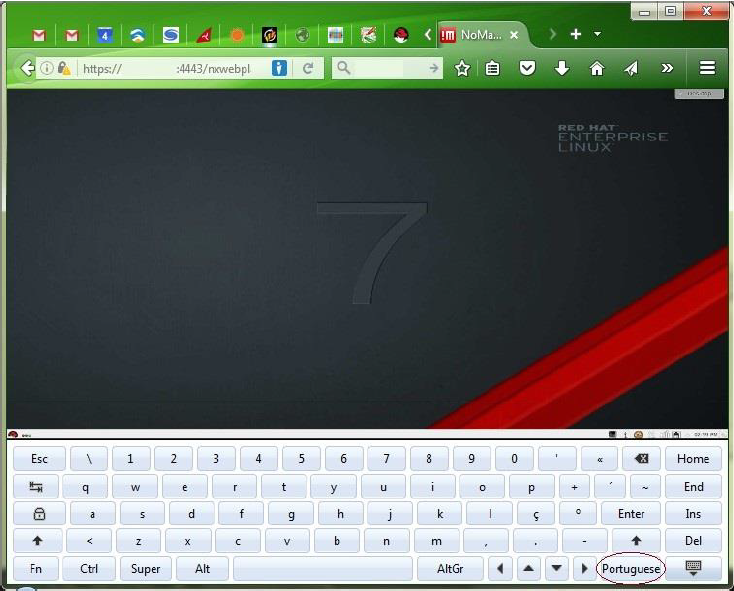
7.16 Appendix 6 – Frequently Asked Questions
- After the login in “https://webfa.bportugal.pt” I am not able to dowload NoMachine’s setup file
It may occur that a firewall is preventing the download. We have verified such problem in some Universities and Governmental services. Please try the download outside the firewall
- Mac users are not able to install NoMachine, receiving the following message
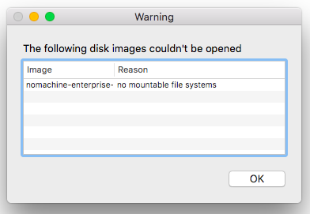
Please check if your Mac OSX is updated. Temporary solution: download NoMachine Enterprise Client from the official website, and run the installation file:
https://www.nomachine.com/download-enterprise\#NoMachine-Enterprise-Client
- NoMachine authentication failure
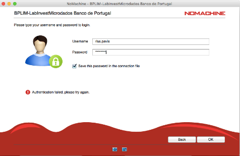
We have observed that some users who change their password within “https://webfa.bportugal.pt” later are not able to login within NoMachine (error message shown in the image above). In some cases it occurs due to a different keyboard layout. For example, if you have a Portuguese keyboard, but the website assumed a US keyboard, and your password contains a symbol like ‘ç’, than you will get a “wrong password” message. Please check the keyboard layout that is active when you type the password. Alternatively, change the password after the first login with NoMachine. Use linux’s command ‘passwd’.
Login fails and the system shows the message: "Could not connect to the server. Error is 138: Connection is timed out" Please check if your network has a strict firewall; e.g., some researchers are not able to reach BPLIM’s server within their University network. Please check if in a different location, like at home, the connection works.
- User pressed ‘Lock’ instead of ‘Log out’ and the unlock/password does not work:
Check if the keyboard settings are correct (e.g., PT or UK)
Close the ‘NoMachine’ connection and start a new one. Before the last step -before the 'Login’- right click and choose ‘Logout’. Double-click for the new connection
- “Cannot see the screen in NoMachine” (see image below)
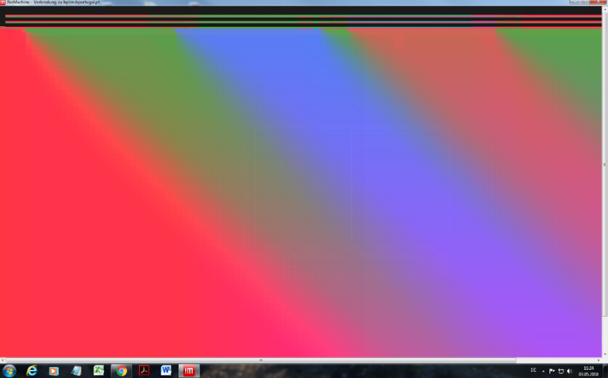
- OPTION A: move your mouse on top the upper right corner of NoMachine, you should see a “folded like sheet”, left-click your mouse, go to ‘Display’, ‘Change settings’, and click in ‘Disable client side hardware decoding’

- OPTION B: Close the ‘NoMachine’ connection and start a new one. Before the last step -before the 'Login’- right click and choose ‘Logout’. Double-click for the new connection
For more information, see the manual on the Annual Data of Central Balance Sheet Database.↩
To see the labels in English type the following command line in Stata: ‘label language en’.↩
A Micro-Entity is defined as a firm that falls below in at least two of the following criteria at the balance sheet date: i) total assets equal to 500.000 euros; ii) net turnover equal to 500.000 euros; or iii) average number of employees equal to 5. Small-sized Entities are firms satisfying at least two of the following conditions: i) total assets below 500.000 euros; ii) total gross sales and other income lower than 1.000.000 euros or; iii) average number of employees less than 20. For more details please check the manual on Central Balance Sheet Database - Annual Data.↩
The relative changes are defined as the difference between the value of the variable observed in year t minus the value observed in the previous year. Relative changes are computed with respect to the average of year t and t-1 and are measured in percentage.↩
In 2010 some declarations were reported according to Plano Oficial de Contas. This situation occurs mostly for declarations sent in the cessation period and before or after the firms adopts a special fiscal period - a fiscal period different from calendar year.↩
With the introduction of SNC some components that were previously classified as fixed tangible assets were reallocated to intangible assets to accommodate international standards. An example is highway concessions which were considered as tangible assets in POC and were reclassified as intangible assets in SNC.↩
This variable has no match in Plano Oficial de Contas.↩